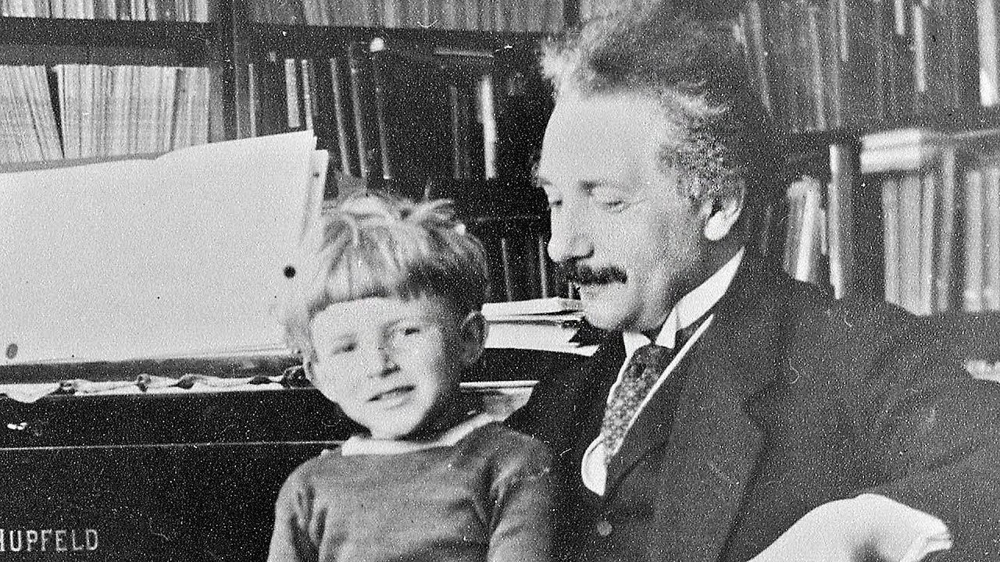

Cetățenia
Albert Einstein, unul dintre cei mai cunoscuți fizicieni din istorie, a avut o viață marcată nu doar de descoperiri științifice, ci și de o serie de schimbări importante în privința cetățeniei sale. Aceste modificări reflectă contextul politic și social al vremurilor în care a trăit, dar și convingerile și nevoile personale ale lui Einstein. De-a lungul vieții, a deținut nu mai puțin de patru cetățenii, fiecare dintre ele având un rol semnificativ în parcursul său personal și profesional.
1. Cetățenia germană (Imperiul German) – 1879 până în 1896
Albert Einstein s-a născut pe 14 martie 1879 în Ulm, în Regatul Württemberg, parte a Imperiului German. Astfel, la naștere, a primit cetățenia germană. Familia sa era de origine evreiască, dar nu era religioasă. Copilăria și adolescența sa s-au desfășurat în principal în Germania și Italia. Totuși, în 1896, la vârsta de 17 ani, Einstein a renunțat voluntar la cetățenia germană. Această decizie a fost influențată de două motive: dorința de a evita serviciul militar obligatoriu în Germania și faptul că se mutase în Elveția pentru studii. După această renunțare, el a rămas apatrid (fără cetățenie) pentru o perioadă de cinci ani.
2. Cetățenia elvețiană – din 1901
În 1901, după ce trăise și studiase mai mulți ani în Elveția (inclusiv la Școala Politehnică Federală din Zürich), Einstein a obținut cetățenia elvețiană. Această țară i-a oferit un mediu stabil și neutru în care să se dezvolte ca om de știință. Tot în această perioadă, Einstein a lucrat ca funcționar la Oficiul de Brevete din Berna, unde a elaborat o mare parte din ideile care aveau să formeze baza teoriei relativității restrânse. Cetățenia elvețiană i-a rămas valabilă până la sfârșitul vieții, chiar și după ce a dobândit alte cetățenii.
3. Restabilirea cetățeniei germane (Republica de la Weimar) – din 1914 până în 1933
În 1914, Einstein s-a întors în Germania pentru a accepta o prestigioasă poziție academică la Universitatea Humboldt din Berlin și la Academia Prusacă de Științe. Pentru a putea ocupa aceste funcții, i-a fost redată cetățenia germană. Această perioadă a fost una extrem de prolifică din punct de vedere științific. În 1915, Einstein a finalizat teoria relativității generale, una dintre cele mai importante contribuții ale sale. Însă odată cu ascensiunea nazismului și a lui Adolf Hitler în 1933, viața lui Einstein, ca evreu și intelectual liberal, a devenit periculoasă. Deși se afla în Statele Unite într-un turneu, a ales să nu se mai întoarcă în Germania. În martie 1933, a demisionat oficial din toate funcțiile academice și a renunțat definitiv la cetățenia germană pentru a doua oară, condamnând regimul nazist.
4. Cetățenia americană – din 1940 până la moartea sa (1955)
După emigrarea sa în Statele Unite ale Americii, Einstein a acceptat o poziție la Institute for Advanced Study în Princeton, New Jersey. Aici și-a petrecut ultimii 20 de ani din viață. În 1940, a devenit cetățean american, păstrând însă și cetățenia elvețiană. În timpul celui de-Al Doilea Război Mondial, a fost o figură importantă în comunitatea științifică americană, deși nu a fost direct implicat în Proiectul Manhattan. A fost, însă, cel care a semnat faimoasa scrisoare către președintele Roosevelt, în care avertiza asupra potențialului bombei atomice.